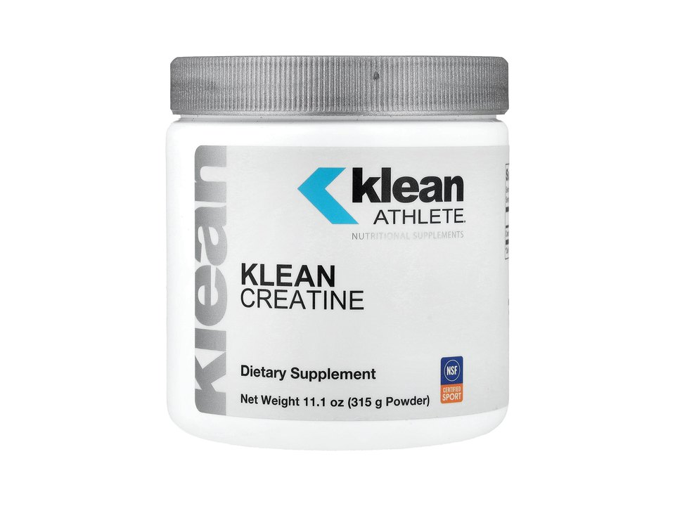

Product imagery supplied by the retailer. Packaging may vary — verify the Supplement Facts panel on the container you receive.
Klean Athlete
Klean Creatine
Our analysis — editorial take, not from the label
Single-ingredient 5 g monohydrate carrying NSF Certified for Sport certification, priced at a premium for the tested-athlete market.
- Creatine
- 5 g
- Form
- monohydrate
- Servings
- 60
Price tier: Premium · relative cost per full serving across this database
We don't list dollar prices — they change daily and go stale. Check the live price instead:
View current price at Amazon Compare all creatine productsScoop Sense doesn't collect user reviews and won't invent them. Read customer reviews on Amazon
Affiliate links — Scoop Sense may earn a commission at no additional cost to you.
Unflavored single-ingredient powder.
Label verified: July 2026 · View label source
Label data
Per full serving · 60 servings per container · from the manufacturer's panel
| Creatine per serving | 5 g |
|---|---|
| Form | monohydrate |
| Creatine Monohydrate | 5 g |
| Single-ingredient formula | 5 g |
| Proprietary blend | No |
Primary label source: The Feed listing · verified July 2026
Cautions
- Draws water into muscle — drink more water
- Loading phases are optional; 3–5 g daily reaches saturation in about 4 weeks
- Talk to your doctor if you have kidney conditions
Formulated for healthy adults — not intended for anyone under 18. Full health & safety notes
Product details
Where this label sits
Klean Athlete Klean Creatine is one of the creatine products in the Scoop Sense database. Every active ingredient on the panel is listed with its own dose — nothing is hidden inside a blend total. It runs 60 servings per container at the full labeled serving. Everything on this page comes from the manufacturer's supplement facts panel as of July 2026 — never from the marketing page.
Key ingredients & studied doses
- Creatine Monohydrate · 5 g. Studied for supporting muscle strength, performance, and recovery from strenuous exercise by aiding ATP re-synthesis.
- Single-ingredient formula · 5 g. The label lists creatine monohydrate as the only ingredient; the product is gluten-free and vegan.
Flavors & sweetener
Unflavored single-ingredient powder.
Who it's best for
Anyone who wants the form with the deepest research base — most creatine studies use 3–5 g of monohydrate daily. Derived from the label figures above — not medical advice.
How we log this label
Every entry is built the same way: we read the current supplement facts panel, log each disclosed dose, compare it against the amounts used in published research, flag proprietary blends, and state the cautions plainly. The full methodology explains each step.
This label against the research
How we evaluate labelsEach bar shows the amount commonly used in published human research, and where this label's dose falls against it. Research amounts are context, not a recommendation — they are not doses, and nothing here is medical advice. The bars compare what the label states; we do not laboratory-test the product to confirm it.
-
Creatine5 g
At or above the studied amount0studied range 3 g–5 g6 g
Maintenance dosing in the research is 3–5 g a day of monohydrate, every day, not only on training days.
Source: Kreider et al., Journal of the International Society of Sports Nutrition 2017 — “Once muscle creatine stores are fully saturated, creatine stores can generally be maintained by ingesting 3–5 g/day”
Common questions about Klean Athlete Klean Creatine
Do I need a loading phase with Klean Athlete Klean Creatine?
Loading is optional. Research shows a steady 3–5 g of creatine monohydrate daily reaches muscle saturation in about three to four weeks; a loading week of around 20 g per day just gets there faster. This label's 5 g serving sits in that studied range.
Does Klean Athlete Klean Creatine disclose every dose?
Yes — the label lists an individual amount for each ingredient, with no proprietary blends. That is what the "label fully disclosed" tag on Scoop Sense means, and it is what lets each dose be compared against the amounts used in published research.